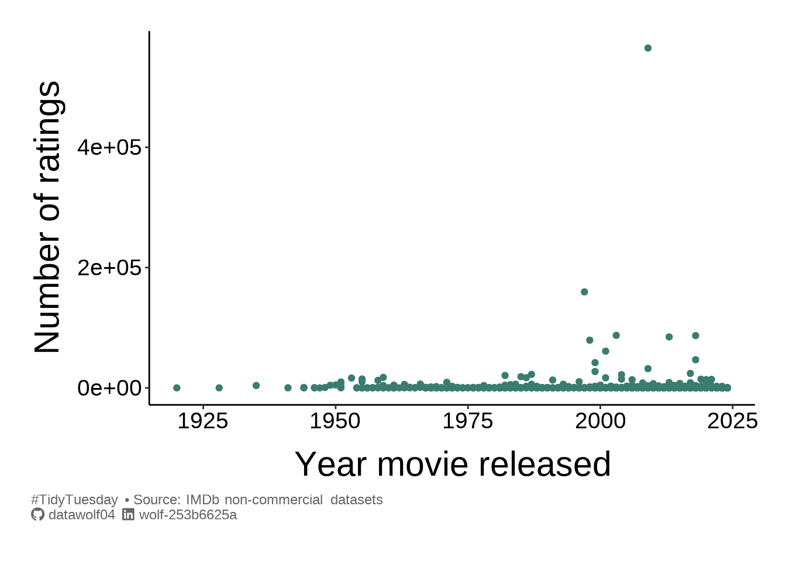
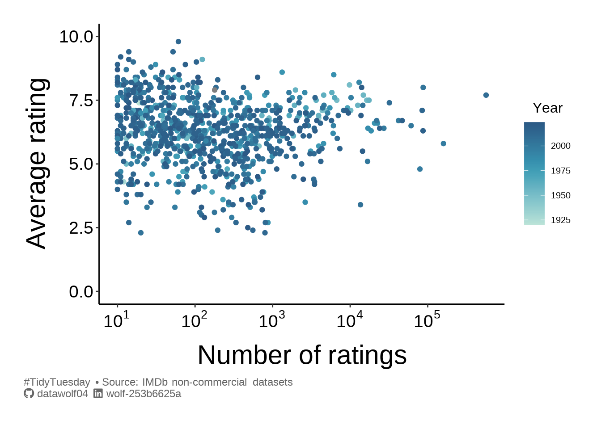
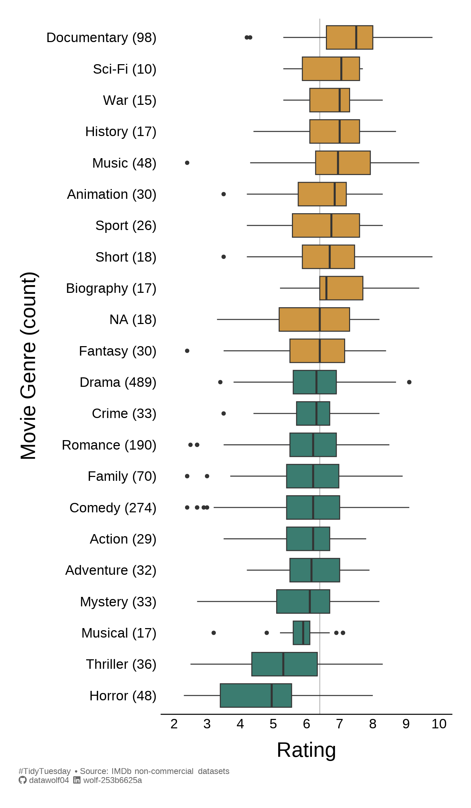

library(tidyverse)
library(ggtext)
library(showtext)
library(janitor)
library(ggdist)
library(ggrepel)
library(scales)
library(paletteer)
load('summerMovie.RData')This week we’re exploring “summer” movies: movies with summer in their title!
The data this week comes from the Internet Movie Database.
Popularity of movie by year
In some sense how well-known or popular a movie is should depend on the year. I’m guessing that very old movies may not have as many votes in the IMDB system. This could also bias the ratings
ggplot(summer_movies, aes(x=year,y=num_votes)) +
geom_point(color=oneCol) +
labs(
x = "Year movie released",
y = "Number of ratings",
caption = caption_text
) + theme_simple()Warning: Removed 1 row containing missing values or values outside the scale range
(`geom_point()`).
I can definitely see that there is a volume bias towards newer movies. Let’s explore if this shows up in the ratings.
ggplot(summer_movies, aes(x=num_votes, y=average_rating, color=year)) +
geom_point() +
scale_x_log10(breaks = trans_breaks("log10", function(x) 10^x),
labels = trans_format("log10", math_format(10^.x))) +
scale_y_continuous(limits = c(0,10)) +
scale_color_paletteer_c(col_pal_cont) +
labs(
x = "Number of ratings",
y = "Average rating",
color = "Year",
caption = caption_text
) + theme_simple()
I’d say that there are no truly universally bad summer movies (for example with everyone scoring it a 0 or 1 out of 10). Despite the recency bias in the rating volume, it would seem that movies can be rated poorly or highly regardless of the year the movie was released. It also seems like there is a “reversion to the mean” effect for movies that have more votes, although this could simply be the result of sparse data. By “reversion to the mean” I am referring to the vaguely triangular shape of the blob of points, suggesting that as a movie is rated more and more, the diversity of opinion forces the mean rating to tend away from extreme values.
Re-imagining other work
As I’m doing this a bit late in the game, I can take advantage of the work some others have done. I saw this plot, and thought it would be good to replicate here, with a subtle twist.

Rather than plotting mean values for each genre, I thought I’d make a box plot instead of plotting the average rating. So I will tidy up the data. Furthermore, since I’m creating a box plot, I’m going to remove genres with fewer than \(N=5\) ratings.
globalMedian = median(summer_movies$average_rating, na.rm = TRUE)
gDat <- summer_movies |> separate_longer_delim(cols = genres, delim = ",") |>
group_by(genres)
newGenre <- gDat |>
summarise(
count = n(),
rating = median(average_rating, na.rm = TRUE),
.groups = "drop"
)
data4plot = full_join(newGenre,gDat,by="genres") |>
mutate(
genre_count = str_glue("{genres} ({count})"),
genre_count = fct_reorder(genre_count, rating, .desc = FALSE),
highlight = ifelse(rating >= globalMedian, "yes","no")
) |>
filter(count>=5)And finally, the plot.
ggplot(data4plot, aes(x=average_rating, y=genre_count, fill=highlight)) +
geom_vline(
xintercept = globalMedian,
linewidth = .5,
color = 'gray'
) +
geom_boxplot() +
labs(
x = "Rating",
y = "Movie Genre (count)",
caption = caption_text
) +
scale_x_continuous(breaks = seq(2,10,by=1), limits=c(2,10)) +
scale_y_discrete() +
scale_fill_paletteer_d(col_pal_dis) +
coord_cartesian(clip='off') + theme_catY()
Final notes
I just found out about #TidyTuesday, just this week, and I want to participate. So the purpose of this post is mostly to get a blog going, and I hope to update approximately monthly. Now that this post is written, we‚Äôll see if I can get this onto Github Pages. üòÑ
[Edit: Phew! That worked!]